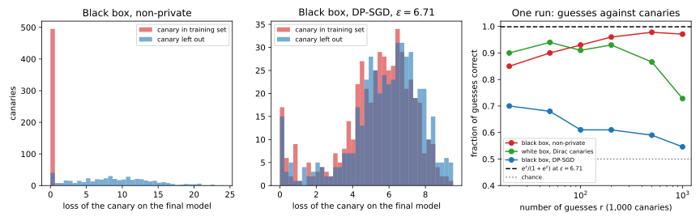
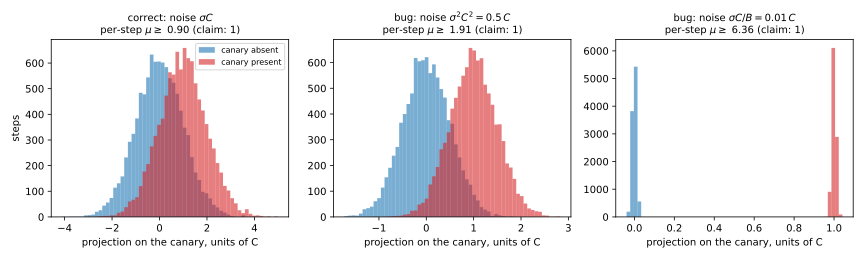

45 Auditing private training
45.1 Why this matters
Every chapter of this part ends with a number from an accountant. Take the running example: stochastic gradient descent (SGD) under differential privacy (DP), with per-example clipping and Gaussian noise (DP-SGD), at sampling rate \(q = 0.01\), noise multiplier \(\sigma = 1\) and 10,000 steps on 10,000 records. The Rényi differential privacy (RDP) accountant reports \(\varepsilon = 6.71\) at \(\delta = 10^{-5}\). That number is the conclusion of a proof about an algorithm on paper, and what ships is code. An implementation can quietly differ from the algorithm in many places: noise scaled for the averaged gradient but added to the sum, the wrong dataset size handed to the accountant, batches sampled one way and accounted another, a random seed reused. None of these changes the accuracy much, so the usual tests don’t catch them. Is the trained model as private as the accountant says?
An audit answers by attacking. It plants records of its own, canaries, trains with and without them, runs a membership test, and counts how often the test is right. The one idea is that privacy caps every test, so a measured test bounds privacy from below. If the test is right too often for any \(\varepsilon\) below some value, the algorithm cannot be private at that level. A lower bound like this can never prove privacy. It can refute a claim when it lands above it, and it measures how much of the accountant’s worst case a given attacker actually realizes.
45.2 From an attack to a lower bound
Any membership test says “canary in” on some set of outputs. Its true positive rate (TPR) is the probability of saying so when the canary was trained on, and its false positive rate (FPR) the probability when it was not. Both are probabilities of one event in two neighbouring worlds, and \((\varepsilon, \delta)\)-DP says the first is at most \(e^\varepsilon\) times the second plus \(\delta\) (The definition of differential privacy). Applied to the complementary event it also says that a test cannot be almost always right about absent canaries while rarely missing present ones. Solve both for \(\varepsilon\) and any test forces \[\varepsilon \ge \ln\frac{\mathrm{TPR} - \delta}{\mathrm{FPR}} \quad\text{and}\quad \varepsilon \ge \ln\frac{1 - \mathrm{FPR} - \delta}{1 - \mathrm{TPR}}. \tag{45.1}\]
The rates are not known, only estimated from \(n\) trials with the canary and \(n\) without, each trial being a fresh training run. So the bound must use the pessimistic end of each estimate: an upper bound \(\bar\alpha\) on the FPR and a lower bound \(\underline\tau\) on the TPR. The standard choice is the one-sided Clopper–Pearson bound, the rate at which seeing as few (or as many) events as you saw would have probability only 2.5%. A true rate beyond it would make your data implausible. With both bounds at level \(\beta/2\) they hold together with probability \(1 - \beta\), and then the algorithm is not \((\varepsilon, \delta)\)-DP for any \(\varepsilon\) below \[\varepsilon_{\mathrm{lo}} = \max\Big\{\ln\frac{\underline\tau - \delta}{\bar\alpha},\ \ln\frac{1 - \bar\alpha - \delta}{1 - \underline\tau}\Big\}. \tag{45.2}\]
Confidence is expensive. Suppose 1,000 runs with the canary and 1,000 without give 500 true positives and 1 false positive. The point estimate is \(\ln(0.5/0.001) = 6.21\). But one false positive in 1,000 is consistent with a true FPR of 0.00556, five times larger, and the TPR could be as low as 0.4685, so the certified bound is only 4.43. With ten times the trials and the same rates the bound rises to 5.59. The point estimate does not change; the price of confidence falls, slowly.
That slowness has a hard limit. Even a perfect attack, with no false positives and no misses, cannot show an FPR below about \(\ln(2/\beta)/n\), because zero events in \(n\) trials is consistent with any rate up to roughly that (the rule of three, \(3/n\) at 95%). Since \(\varepsilon\) is about \(\ln(1/\mathrm{FPR})\) when the TPR is near 1, \(n\) trials per hypothesis can certify at most about \[\varepsilon_{\max}(n) \approx \ln\frac{n}{\ln(2/\beta)}, \tag{45.3}\] and each extra unit of \(\varepsilon\) costs a factor of \(e\) in trials (Table 45.1). Certifying the running example’s 6.71 needs at least 3,038 trials per hypothesis, so 6,076 training runs, even for an attack that never errs. For a real network, each run is a full training job.
| Trials per hypothesis \(n\) | 100 | 1,000 | 10,000 | 100,000 | 1,000,000 |
|---|---|---|---|---|---|
| Largest certifiable \(\varepsilon\) | 3.28 | 5.60 | 7.90 | 10.21 | 12.51 |
Two pitfalls follow from the reasoning. The confidence level assumes the threshold was fixed before counting. Sweeping the threshold over the same trials and reporting the best bound, which is common in parts of the literature, makes the confidence level wrong, because among many thresholds one is lucky. Choose the threshold on half the trials and count on the other half. And try both forms of Equation 45.2: a test that says “in” almost always, with FPR 0.5 and TPR 0.999, gets 0.69 from the first form and 6.21 from the second.
45.3 Canaries and threat models
DP is a promise about the worst pair of datasets and the worst test, so an audit has to build both. A typical record and a loss threshold give a valid but nearly useless bound, because most records are barely exposed (Membership inference). The auditor chooses a canary and a view of training. An input-space canary is an ordinary record designed to be exposed, such as a mislabeled example or one far from the data. A gradient-space canary lets the auditor write the canary’s gradient directly, as if it controlled the training code. The strongest is a Dirac canary: a gradient of norm exactly \(C\), the clipping norm, on one coordinate that no other record’s gradient touches (Nasr et al. 2023). In the black-box threat model the attacker sees only the final model. In the white-box model it sees every iterate, and therefore every noisy gradient sum.
A Dirac canary seen white-box makes the audit face exactly the accountant’s pair. On the canary’s coordinate, every other record contributes nothing, so each step’s noisy sum, divided by \(C\), is pure noise \(\mathcal N(0, \sigma^2)\) without the canary. With it, the step adds 1 whenever the canary is sampled, with probability \(q\), so the value comes from the mixture \((1 - q)\mathcal N(0, \sigma^2) + q\,\mathcal N(1, \sigma^2)\). The sampling and the noise are fresh at every step, so the \(T\) steps are independent. That is the pair the accountant of Amplification by subsampling analyses. The best test, by the Neyman–Pearson lemma, adds up each step’s log likelihood ratio, \[\Lambda = \sum_{t=1}^T\ln\Big(1 - q + q\,e^{(x_t - 1/2)/\sigma^2}\Big), \tag{45.4}\] where \(x_t\) is the step’s value on the canary coordinate. No attacker can do better against this canary, since the rest of training carries no evidence beyond the \(x_t\).
The simpler sum of projections \(\sum_t x_t\), which an attacker who sees only the first and last models can compute, treats every step alike. The likelihood ratio does not: a step at \(x_t = 3\) is three noise standard deviations out, which is very unlikely without the canary, so the exponential gives it far more weight than three steps at 1. In Gaussian differential privacy (GDP) terms, where a run behaves like distinguishing two unit normals at distance \(\mu\) (f-DP and Gaussian DP), the central limit theorem puts \(\Lambda\) close to \(\mu = q\sqrt{T(e^{1/\sigma^2} - 1)} = 1.3108\) on the running example, and the sum close to only 0.9951. Read through the Gaussian privacy profile at \(\delta = 10^{-5}\), that is the difference between \(\varepsilon = 6.01\) and \(4.35\), settled before a single trial is run.
Black-box audits with input canaries are weaker. The final model is one function of all the noisy sums, so it carries at most as much information as all of them, and usually much less. An input canary’s gradient shrinks or turns once the model fits it, and it shares directions with the other records’ gradients, which act as extra noise. Nasr et al. (2021) found the lower bound tight for an adversary who sees every iterate and chooses the dataset and canary, and much weaker as the adversary was restricted towards a realistic one.
So the two threat models answer different questions. A white-box gradient audit tests the mechanism, whether the code clips and adds the noise the proof assumes, and its bound should approach the accountant’s. A black-box input audit tests the deployment, what an attacker with the released model can do, and its gap to the accountant measures how far this attacker is from the proof’s worst case, not a bug.
45.4 Why even the best audit stops short
The white-box Dirac audit with enough trials converges to the true \(\varepsilon\) of the pair, not to the accountant’s number. The RDP accountant’s 6.71 is an upper bound. The numerical accountant puts the true value of the running example between 6.14 and 6.24, and the Gaussian approximation gives 6.01. So even an audit with infinitely many trials stops about half a unit below 6.71, and that gap belongs to the accountant.
The main reason real audits fall much further short is where \(\varepsilon\) lives. The pair \((\varepsilon, \delta)\) is a line touching the trade-off curve, the best TPR at each FPR, and at \(\delta = 10^{-5}\) it touches the Gaussian approximation of the running example’s curve at an FPR of \(8.1\times10^{-8}\), with a TPR of \(4.3\times10^{-5}\). At the rates you can measure, the ratio TPR/FPR is far smaller. For \(\mu = 1.3108\), \(\ln(\mathrm{TPR}/\mathrm{FPR})\) is 2.74 at FPR \(10^{-2}\), 3.63 at \(10^{-3}\) and 4.38 at \(10^{-4}\). Reaching 6 needs FPR near \(10^{-7}\), and about \(1.2\times10^{8}\) runs without the canary to see ten false positives there (Figure 45.1).

Nasr et al. (2023) work around the tail by assuming the shape of the curve. If the mechanism is \(\mu\)-GDP, a single test at moderate FPR bounds \(\mu\) from below, \[\mu \ge \Phi^{-1}(\mathrm{TPR}) - \Phi^{-1}(\mathrm{FPR}), \tag{45.5}\] with \(\Phi\) the standard normal distribution function, and the Gaussian shape carries the bound into the tail. The bound on \(\mu\) is rigorous. The conversion to \(\varepsilon\) is valid only if the curve really is Gaussian. For the subsampled Gaussian of DP-SGD it is not exactly: its tail is heavier, and the \(\mu\) that Equation 45.5 gives depends on where you read it, from 1.300 at FPR \(10^{-1}\) to 1.492 at \(2\times10^{-4}\) in the simulation below.
The full edition’s script simulates the white-box Dirac audit from the per-step pair. That is statistically identical to training the network with a Dirac canary, and thousands of times cheaper. Table 45.2 gives the certified bounds, each with the threshold chosen on the first half of the trials.
| Trials per hypothesis | 1,000 | 3,000 | 10,000 | 50,000 |
|---|---|---|---|---|
| \(\varepsilon_{\mathrm{lo}}\), Equation 45.2 | 1.64 | 1.88 | 2.84 | 3.63 |
| \(\varepsilon\) from the \(\mu\) bound (assumes the Gaussian shape) | 3.36 | 4.70 | 5.13 | 5.33 |
| Ceiling at half the trials | 4.91 | 6.01 | 7.21 | 8.82 |
The rigorous bound reaches 3.63 with 100,000 simulated training runs, about half the claim. The Gaussian-shape estimate climbs faster, to 5.33, approaching 6.01 from below. Bounds read in the far tail are also noisy. The sum of projections certifies 3.26 with 100,000 trials per hypothesis but 2.27 with 1,000,000 in this run, because a threshold chosen to let through a handful of false positives let through more on the other half. Every number is below the claim, as it must be for a correct implementation.
45.5 One-run auditing
Thousands of training runs are out of the question for a model that takes a day to train. Steinke, Nasr & Jagielski (2023) get many trials from one run. Insert \(m\) canaries, each included by an independent fair coin, train once, and score them all. Guess “in” for the \(r/2\) highest scores and “out” for the \(r/2\) lowest, and abstain on the rest. Under \(\varepsilon\)-DP, each guess is right with probability at most \[p_\varepsilon = \frac{e^\varepsilon}{1 + e^\varepsilon}, \tag{45.6}\] whatever happened to the guesses before it. The reason is Bayes’ rule: the canary’s inclusion had prior one half, and seeing the trained model can multiply the odds by at most \(e^\varepsilon\), since flipping that one coin adds or removes one record. So the number of correct guesses is dominated by a binomial with \(r\) trials and success probability \(p_\varepsilon\), and observing too many correct guesses rejects \(\varepsilon\). The paper’s example: 75 correct out of 100, which is what \(\varepsilon = \ln 3\) produces on average, certifies 0.702 at 95% confidence.
Under \((\varepsilon, \delta)\)-DP a correction of order \(2m\delta\) is added to the binomial tail, which is small next to \(\beta = 0.05\) for 1,000 canaries at \(\delta = 10^{-5}\) but can swallow the whole significance budget as \(m\) grows.
The coin flips must be independent and fair, because the argument uses the prior of one half. With a deterministic split, guesses could be right for reasons unrelated to training, such as the order of the canaries. And the ceiling is again logarithmic. All \(r\) guesses right certifies about \(\ln(r/\ln(1/\beta))\): 3.49 for 100 canaries, 5.81 for 1,000 and 8.11 for 10,000, with \(\delta = 0\). Certifying 6.71 needs about 2,500 canaries guessed without an error. Each canary is a trial, so one run saves training runs, not trials.
One run is also not tight for DP-SGD. The binomial is calibrated to randomized response, whose trade-off curve has a sharp corner, while DP-SGD’s is smooth, and each canary is guessed once, so the audit reads the curve near FPR \(1/m\) at best. Simulating 1,000 white-box Dirac canaries in one run of the running example, and paying for trying six list lengths with a Bonferroni correction, the 50 most confident guesses are all right and certify 2.22. That compares with 2.84 from 10,000 runs per hypothesis, at a twenty-thousandth of the cost.
45.6 What a black-box attacker learns
The white-box audit tests the mechanism. To see what the released network itself gives away, take 1,000 test records and flip their labels, so that the model can fit them only by memorizing. Include each with probability one half, train once, and score each canary by minus its loss on the final model. Run the same audit on a model trained with clipping but no noise, and on one without clipping or noise, as controls (Table 45.3).
| Training | Test accuracy | Mean loss, in | Mean loss, out | Correct of \(r = 100\) | Best \(\varepsilon_{\mathrm{lo}}\) |
|---|---|---|---|---|---|
| DP-SGD, \(\sigma = 1\), claim \(\varepsilon = 6.71\) | 0.9645 | 5.565 | 6.013 | 59 | 0.13 |
| Clipping only, \(\sigma = 0\), \(\varepsilon = \infty\) | 0.9638 | 5.511 | 6.155 | 67 | 0.24 |
| Non-private, no clipping | 0.9155 | 0.023 | 9.041 | 91 | 2.96 |
The non-private model memorizes: the canaries it trained on have mean loss 0.023 against 9.041 for those it did not see, and the audit certifies 2.96. DP-SGD does not, and its bound is 0.13. The clipping-only model, which has no finite \(\varepsilon\) at all, is barely easier at 0.24. That control is what makes the result readable. Clipping alone limits each canary’s pull on the weights to \(C\) per step, against the combined pull of 10,000 correctly labelled records, and that, more than the noise, is what defeats this attacker. So a small black-box bound is a statement about the attacker, not about the model’s privacy. Nothing here contradicts 6.71, and nothing confirms it (Figure 45.2).

45.7 Finding bugs
Because an audit bound above the claim refutes it with confidence \(1 - \beta\), audits work as a test suite for private training code: silent on a correct implementation, loud on a broken one. The cheapest is a per-step audit. Put a Dirac canary into every step of one run and leave it out of another, and treat each step’s projection as a trial. With the canary always present there is no sampling coin, so each step of a correct implementation is a plain Gaussian mechanism: \(\mathcal N(0, \sigma^2)\) against \(\mathcal N(1, \sigma^2)\), exactly \(\mu\)-GDP with \(\mu = 1/\sigma\). Two runs of 10,000 steps give 10,000 trials per hypothesis, and Equation 45.5 with Clopper–Pearson rates gives a rigorous \(\mu_{\mathrm{lo}}\). If \(\mu_{\mathrm{lo}} > 1/\sigma\), the code does not add the noise it claims (Table 45.4, Figure 45.3).
| Implementation | Noise on the sum | Claimed \(\mu\) | Audited \(\mu_{\mathrm{lo}}\) | Verdict |
|---|---|---|---|---|
| Correct | \(\sigma C\) | 1 | 0.886 | consistent |
| Variance passed as a standard deviation | \(\sigma^2C^2 = 0.5\,C\) | 1 | 1.745 | refuted |
| Noise scaled for the mean, added to the sum | \(\sigma C/B = 0.01\,C\) | 1 | 6.359 | refuted |

The correct implementation passes with room to spare. The two noise bugs fail by margins no bad luck explains. With \(C = 0.5\), passing the variance \(\sigma^2C^2 = 0.25\) where the code expects a standard deviation halves the noise. Scaling the noise for the averaged gradient, whose sensitivity is \(C/B\), and adding it to the sum makes it 100 times too small, and the steps separate the hypotheses perfectly. Nasr et al. (2023) caught bugs of this kind in real code: clipping applied after averaging, noise drawn from a seed with only 100 possible values, and a wrong noise scale.
A per-step audit cannot see the sampling or the accountant, because the canary is in every step and the audit checks the noise against \(\sigma\), not against \(\varepsilon\). Suppose the accountant is told the dataset has 20,000 records instead of 10,000, as can happen when augmented copies are counted. It computes \(q = 0.005\) and reports \(\varepsilon = 3.06\). The per-step audit measures the right noise, and composed at the claimed \(q\) its bound gives 2.47, no contradiction. The end-to-end audit of Table 45.2 catches it: its 3.63 exceeds 3.06, so the claim is false with 95% confidence.
An end-to-end audit only catches bugs that raise the true \(\varepsilon\) by more than its shortfall, about three units at 100,000 runs here, on the datasets and records it tried. Batches drawn by shuffling but accounted as Poisson can have an \(\varepsilon\) several times the reported one, yet a per-step audit never exercises the sampling, and an end-to-end audit sees the gap only where it exceeds the shortfall. And audits catch errors only in the unsafe direction: noise \(\sigma C\) added to the mean instead of the sum is \(B\) times more noise than claimed, wastes accuracy, and passes every audit. Passing an audit is evidence, never a certificate.
45.8 Code
This snippet computes the bounds of this chapter from counts alone, with Clopper–Pearson intervals from exact binomial sums:
from collections.abc import Callable
from math import exp, lgamma, log
from statistics import NormalDist
N = NormalDist()
def binom_cdf(k: int, n: int, p: float) -> float:
"""Pr[Bin(n, p) <= k], summed in logs so that large n is safe."""
if p <= 0.0:
return 1.0
if p >= 1.0:
return 1.0 if k >= n else 0.0
log_terms = (lgamma(n + 1) - lgamma(i + 1) - lgamma(n - i + 1) + i * log(p) + (n - i) * log(1 - p) for i in range(k + 1))
return min(1.0, sum(exp(t) for t in log_terms))
def bisect(f: Callable[[float], float], target: float, lo: float, hi: float) -> float:
"""The x in [lo, hi] with f(x) = target, for f decreasing in x."""
for _ in range(100):
mid = (lo + hi) / 2
lo, hi = (mid, hi) if f(mid) > target else (lo, mid)
return lo
def cp_upper(k: int, n: int, a: float) -> float:
"""One-sided Clopper-Pearson upper bound: the rate at which k or fewer successes has probability a."""
return bisect(lambda p: binom_cdf(k, n, p), a, 0.0, 1.0)
def eps_lower_bound(fp: int, tp: int, n: int, delta: float, beta: float = 0.05) -> float:
"""The eps certified with confidence 1 - beta from fp false and tp true positives in n trials each."""
fpr_hi = cp_upper(fp, n, beta / 2)
tpr_lo = 1 - cp_upper(n - tp, n, beta / 2)
return max(log((tpr_lo - delta) / fpr_hi), log((1 - fpr_hi - delta) / (1 - tpr_lo)))
def ceiling(n: int, delta: float, beta: float = 0.05) -> float:
"""The most a perfect attack can certify with n trials per hypothesis."""
r = (beta / 2) ** (1 / n)
return log((r - delta) / (1 - r))
def one_run_bound(correct: int, guesses: int, beta: float = 0.05) -> float:
"""The eps a one-run audit certifies under pure DP: the largest eps the binomial tail rejects."""
def tail(eps: float) -> float:
return -(1 - binom_cdf(correct - 1, guesses, exp(eps) / (1 + exp(eps))))
return bisect(tail, -beta, 0.0, 20.0)
def gdp_eps(mu: float, delta: float) -> float:
"""The eps of mu-GDP at a given delta, from the Gaussian privacy profile."""
def profile(eps: float) -> float:
return N.cdf(-eps / mu + mu / 2) - exp(eps) * N.cdf(-eps / mu - mu / 2)
return bisect(profile, delta, 0.0, 50.0)
print(f"{eps_lower_bound(1, 500, 1_000, 1e-5):.2f}") # 4.43
print(f"{eps_lower_bound(10, 5_000, 10_000, 1e-5):.2f}") # 5.59
print(f"{ceiling(1_000, 1e-5):.2f}") # 5.60
print(f"{ceiling(10_000, 1e-5):.2f}") # 7.90
print(f"{one_run_bound(75, 100):.3f}") # 0.702
print(f"{one_run_bound(100, 100):.2f}") # 3.49
print(f"{gdp_eps(1.3108, 1e-5):.2f}") # 6.01
print(f"{gdp_eps(0.9951, 1e-5):.2f}") # 4.35The full edition’s script runs every audit in this chapter, including 100,000 simulated white-box trials and three trained networks, in a few minutes:
uv run python code/part05-dp-ml/auditing.py45.9 Cheat sheet
| Result | Formula or value | Conditions |
|---|---|---|
| DP caps every test | \(\mathrm{TPR} \le e^\varepsilon\mathrm{FPR} + \delta\), \(1 - \mathrm{FPR} \le e^\varepsilon(1 - \mathrm{TPR}) + \delta\) | Any test, any neighbours |
| Certified bound | \(\max\{\ln\frac{\underline\tau - \delta}{\bar\alpha}, \ln\frac{1 - \bar\alpha - \delta}{1 - \underline\tau}\}\) with Clopper–Pearson bounds | Independent trials; threshold chosen on other trials |
| Ceiling | \(\approx\ln(n/\ln(2/\beta))\): 5.60 at \(n = 1{,}000\), 7.90 at 10,000 | Perfect attack |
| Best statistic, Dirac canary | \(\Lambda = \sum_t\ln(1 - q + qe^{(x_t - 1/2)/\sigma^2})\) | White box, untouched coordinate |
| GDP bound from one test | \(\mu \ge \Phi^{-1}(\mathrm{TPR}) - \Phi^{-1}(\mathrm{FPR})\) | Rigorous for \(\mu\); for \(\varepsilon\) only if the curve is Gaussian |
| One run | Correct guesses \(\preceq \mathrm{Bin}(r, e^\varepsilon/(1 + e^\varepsilon))\), plus a \(2m\delta\)-type correction | Canaries included by independent fair coins |
| Per-step audit | \(\mathcal N(0, \sigma^2)\) against \(\mathcal N(1, \sigma^2)\); claim \(\mu = 1/\sigma\) | Tests noise and clipping only |
Rules of thumb
- An audit can refute a claim, never prove one. Report its threat model with its number.
- Budget trials before you start: each unit of \(\varepsilon\) costs a factor of \(e\) in trials, and \(\varepsilon\) at small \(\delta\) lives at false positive rates you cannot measure.
- To test an implementation, use the strongest attack: white box, Dirac gradient canary, likelihood ratio. Audit the noise per step and the claim end to end.
- Read a small black-box bound as a statement about the attacker, not as the model’s privacy.
45.10 Further reading
- Jagielski, Ullman & Oprea, “Auditing Differentially Private Machine Learning: How Private is Private SGD?” (NeurIPS 2020): an early audit of DP-SGD with poisoning canaries and Clopper–Pearson intervals.
- Nasr, Hayes, Steinke, Balle, Tramèr, Jagielski, Carlini & Terzis, “Tight Auditing of Differentially Private Machine Learning” (USENIX Security 2023): Dirac canaries, per-step audits, Gaussian-shape bounds, and real bugs found.
- Steinke, Nasr & Jagielski, “Privacy Auditing with One (1) Training Run” (NeurIPS 2023): the one-run audit, with code for the bound.
- Tramèr, Terzis, Steinke, Song, Jagielski & Carlini, “Debugging Differential Privacy: A Case Study for Privacy Auditing” (arXiv 2022): an audit that refuted the guarantee of a published implementation.
Derivations. Every result in this chapter is derived step by step in the full edition’s chapter.